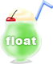

下層ページの構成とは
下層ページの大見出し
下層ページの大見出しは、mainの見出しとなる。headerのh1とmainのh1が存在することになる。
FlexBoxレイアウトの基本
FlexBoxの左エリア
幅サイズは250px
FlexBoxの右側に配置するエリアで、幅サイズは650pxです。
画像の横にテキストを回り込ませ、複数行で表示させるために、img要素にfloatを設定します。
floatプロパティの値をleftにすると、画像が左に配置され、テキストが右に配置されます。rightにすると、画像が右に、テキストが左に配置されます。floatを解除したい要素には、clearプロパティでbothを設定します。
下層ページに使われる要素
- 大見出し（h1）を含むメインコンテンツを囲むarticleタグ
- 大見出し（h1）以外の見出しとその内容をグループ化するsectionタグ
- 現在のページの階層を明示するパンくずリストは、番号付きリスト（olタグ）
- バナーや注意書きなどの補足情報は、asideタグ
表組み
| A列 | B列 | C列 |
|---|---|---|
| 1-a | 1-b | 1-c |
| 2-a | 2-b | 2-c |
| セルの合計数 | 11 | |